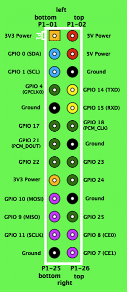
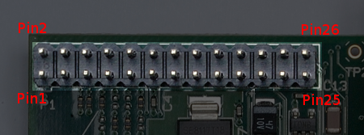

Mini-PI

Contenido
[ocultar]Introduction
The scope of this page is to document the Mini-PI robot.
Mini-PI stands off:
- Mini: The simplest robot: Miniskybot
- PI: Raspberry-PI: cheapest Linux PC
The intend is to build a robot, very simple, using 3D printer, and with the Raspeberry-PI as main processor (CPU).
I will start writing here the steps i am following to do it. I have been so many years without building a robot, and now, i feel excited about it. During these years i have been following all Juan's publications, and i will take advantage of all of them: 3D printers, python, Skymega, ...
About me: I am living in California now, that is one of the reasons i am writing this in english, another, is because i would like to present this in my son's school. They knew about my background in robotics and they would like me to present something. They have a strong team in Lego Mindstorms... let's see what i can do!!
Raspberry-PI
The main webs of Raspberry PI are http://www.raspberrypi.org and http://elinux.org/R-Pi_Hub. The board was originally developed as an educational project, and has became very popular during 2012. I recommend to read this note from the authors.
I decided to use it because several reasons:
- It is cheap
- It is well documented
- It is broadly used
- It has an easy hardware
- It has a GPIO bus with (IO, I2C, SPI, UART), and of course USB, ETH, ...
- Supports Debian Linux
So, after having used a lot of embedded kits (TI DMVA2, DM368, Hi3516, Freescale, Versalogic, DM667, ...) i found this kit really interesting for building low cost robotic applications. It took me a while to find the right moment to start, but once i did it, i was surprised about how fast and easy was to set up everything.
I bought the Raspberry-PI here: http://www.alliedelec.com/images/products/mkt/pb/rasp/rasp.aspx
There are two models A and B. In my case i bought the B because i wanted it to have Ethernet on the board. Option A is not a bad idea, for example if you want to have Wifi then, instead of buying the model B that has the ETH, you can buy the model-A (cheaper) and a USB-Wifi-Dongle... The PN i got is: E1313RS2V13B1.0
Loading the linux image into the SDCard
The first thing i did was to flash the SDcard. I followed the following links:
- http://www.raspberrypi.org/downloads
- http://downloads.raspberrypi.org/download.php?file=/images/raspbian/2013-02-09-wheezy-raspbian/2013-02-09-wheezy-raspbian.zip
- http://elinux.org/RPi_Easy_SD_Card_Setup
In my case i have used Whezzy (Debian stable release by My,2013) as the distribution (the recommended for beginners), and i followed the instructions for MacOS users, and since i am a little bit old i decided to use the command line option. I didn't try the graphical tools, but i am pretty sure that they work and are as easy as the command line method. Once i got the SDcard flashed i put it in the raspberry-PI (model B) and it booted without any problem.
These are the instructions from Raspberry (Using command line tools (2)
Note: Some users have reported issues with using Mac OS X to create SD cards. #These commands and actions need to be performed from an account that has administrator privileges. # Download the image from a mirror or torrent #* http://www.raspberrypi.org/downloads # Verify if the the hash key is the same (optional), in the terminal run: #* shasum ~/Downloads/2012-12-16-wheezy-raspbian.zip # Extract the image: #* unzip ~/Downloads/2012-12-16-wheezy-raspbian.zip #* (or: just double click the zip, it will extract automatically) # From the terminal run df -h # Connect the SD card reader with the SD card inside # Run df -h again and look for the new device that wasn't listed last time. Record the device name of the filesystem's partition, for example, /dev/disk3s1 # Unmount the partition so that you will be allowed to overwrite the disk: #* sudo diskutil unmount /dev/disk3s1 #* (or: open Disk Utility and unmount the partition of the SD card (do not eject it, or you have to reconnect it) # Using the device name of the partition work out the raw device name for the entire disk, by omitting the final "s1" and replacing "disk" with "rdisk" (this is very important: you will lose all data on the hard drive on your computer if you get the wrong device name). Make sure the device name is the name of the whole SD card as described above, not just a partition of it (for example, rdisk3, not rdisk3s1. Similarly you might have another SD drive name/number like rdisk2 or rdisk4, etc. -- recheck by using the df -h command both before & after you insert your SD card reader into your Mac if you have any doubts!): #* For example, /dev/disk3s1 => /dev/rdisk3 # In the terminal write the image to the card with this command, using the raw disk device name from above (read carefully the above step, to be sure you use the correct rdisk# here!): #* sudo dd bs=1m if=~/Downloads/2012-10-28-wheezy-raspbian/2012-12-16-wheezy-raspbian.img of=/dev/rdisk3 #* if the above command report an error(dd: bs: illegal numeric value), please change bs=1M to bs=1m #* (note that dd will not feedback any information until there is an error or it is finished, information will show and disk will re-mount when complete. However if you are curious as to the progresss - ctrl-T (SIGINFO, the status argument of your tty) will display some en-route statistics). # After the dd command finishes, eject the card: #* sudo diskutil eject /dev/rdisk3 #* (or: open Disk Utility and eject the SD card) # Insert it in the Raspberry Pi, and have fun
The first think i saw was the raspi-config tool. The first time i didn't change anything, but once i finish investigating the X-options, i decided to turn off the X-Windows. I am going to run console programs and i will use ssh to connect with the raspberry-PI. In other words, there is no need to have it running now.
Connecting the RaspberryPI
Power Input
Raspberry PI (model B) works with 5VDC / 700mA. There are two ways to powering the board:
- Using the power in micro-usb connector, or
- Using the GPIO Bus (P1). Pins2 and 4 are directly connected to the +5VDC line.
It has some protections in the main power line to prevent damages, but, since the 5VDC is also used in the HDMI, USB, etc... by adding a different voltage than 5VDC you never know if something else will break. That is why the recommendation is to stay with 5DV.
The power input connector is a micro-usb connector. For me this is not the best in robotics, however, it is very common in computer, mobiles, that makes not difficult to find a power kit. And the design has been well thought and they still offer the GPIO as a solution, so i am glad to see that they thought in this as well. We will use the GPIO power input later in our robot, but now, let's use the simplest:
I am using the typical micro-usb to usb cable, and the Mean Well (GS05U-USB) Power supply. It has these capabilities:
- Input: 100-240VAC, 50/60Hz, 0.15A
- Output: 5VDC, 1A, 5.0 W MAX
These ratings are quite standard, for example iPhone, Samsung Galaxy use the same.
First Boot (Interfaces)
When booting it for the first time, I recommend to use a
- USB-Mouse
- USB-Keyboard
- HDMI output (If you don't an HDMI input in your TV/Monitor you can use the old RCA, however it doesn't give you the best)
- Standard power supply that has 5VDC and 1A.
(Default login: Username: pi , Password: raspberry)
It will give you a mini PC, your keyboard, graphical interface, mouse. You can play and learn about it. For example, try to connect and Ethernet cable, discover the IP, do an SSH from another PC Basically, become familiar with it. As authors said: Have Fun!!!
Later configuration (Interfaces)
Mini-PI robot is not going to use the graphical interface, so even if it doesn't take too long to boot, i decided to disable it. I ran the rasp-config as sudo and in boot options i seleceted "Disable graphical interface'. Then i disconnected all the cables, because from now on, i am accessing the system using SSH. The idea is not even use the Ethernet, i will add a Bluetooth module in the serial port, or another USB-Wifi to make it Wireless. We will see this later on this article.
Connecting Sensors
Well, now that i have the CPU up and running, i am going to start adding the sensors and motors.
Before starting, let's go to take a look to the RPI's hardware.
The most important note from creator is the following:
|
The GPIO (general purpose I/O) signals on the 2x13 header pins include SPI, I2C, serial UART, 3V3 and 5V power. These interfaces are not "plug and play" and require care to avoid miswiring. The pins use a 3V3 logic level and are not tolerant of 5V levels, such as you might find on a 5V powered Arduino. |
P1 Header Pinout This a copy from RPI information
|  P1 Top View description |
 P1 Top View Layout |
{kind=link}
{kind=link}
My assignment
- Serial Port
| RPi P1 | Signal | BCM pin |
| pin6 | GND | |
| pin 8 | TXD | GPIO14 |
| pin 10 | RXD | GPIO15 |
- SPI
| RPi P1 | Signal | BCM pin |
| pin19 | MOSI | GPIO10 |
| pin 21 | MISO | GPIO9 |
| pin 23 | SCLK | GPIO11 |
| pin 24 | CE0 | GPIO8 |
| pin 25 | GND | |
| pin 26 | CE1 | GPIO7 |
- I2C
| RPi P1 | Signal | BCM pin |
| pin 3 | SDA | GPIO0 |
| pin 5 | SCL | GPIO1 |
| pin 9 | GND |
- 8 bits port
| RPi P1 | Signal | BCM pin |
| pin 11 | IO 0 | GPIO17 |
| pin 12 | IO 1 | GPIO18 |
| pin 13 | IO 2 | GPIO21 |
| pin 15 | IO 3 | GPIO22 |
| pin 16 | IO 4 | GPIO23 |
| pin 18 | IO 5 | GPIO24 |
| pin 22 | IO 6 | GPIO25 |
| pin 7 | IO 7 | GPIO4 |
Sensors to explore
- Done: Ultrasonic (I2C)
- Not available : Inclinometer (Analog)
- Done: Compas (I2C)
Motors
- Futaba S3003
- Robbe
- Hittec
Output
- Done: Display: 2C, 16*4 lines
- Done : LED
- Done : Relay
- Done : TTL3v3 to Bluetooth link.
Input
- Done : Switch
Almost all these sensors and actuators can be connected directly to the Raspberry-Pi, however, since it has an I2C bus, i want to explore connecting the Skymega as well. By doing this, i could have some others sensors connected using the A/D, and i could take advantage of using a micro for some tasks. It is too early to make decisions, now is time to explore everything.
Connecting the Serial Port
I was looking into all my old robotic's stuff from Spain and i found this cable:
- FTDI: TTL-232R-3V3 (USB cable with 6 way 0.1" pitch single inline connector with +3.3V signaling). Datasheet
The cable comes with a 6 pins connector (GND, CTS, VCC, TXD, RXD, RTS), but i only need three of them (GND, TXD, RXD) so i will put my own connector with only three wires. See the table below, to see my final pin out assignment.
| RPI P1 Pin Number | Description | FTDI Pin Number | Description | My 3wires connector | Description | Notes |
| P1-06 | GND | Pin1 (Black) | GND | Pin 1 (Black) | GND | |
| P1-08 | TXD | Pin 5 (Yellow) | RXD | Pin 2 (Yellow) | RXD | TTL 3.3v signal |
| P1-10 | RXD | Pin 4 (Orange) | TXD | Pin 3 (Orange) | TXD | TTL 3.3v signal |
So, now the only thing we need is to modify the connector and connect it to P1 to see what happens...
Ok, that was easy. I connected the FTDI USB into my computer (I am using a MAC today) and the serial port was attached to /de/cu.usbserial-FTF5YQGL, i configured to use my minicom in that port (115200,8n1) and i got the connection up & running. By default the serial goes to ttyS0 in the Raspberry-PI, that means that we will see the booting from linux, access to the console, etc... It is a good option for "recovery" but i prefer to have it free as another port for my robots. I mean, instead of being used by linux, being use by custom applications.
To disable the console functionality in the serial port you need to do two things:
- Edit the /etc/inittab and comment T0:23:respawn:/sbin/getty -L ttyAMA0 115200 vt100
- Edit the /boot/cmdline.txt and remove the serial port from boot: dwc_otg.lpm_enable=0 console=ttyAMA0,115200 kgdboc=ttyAMA0,115200 console=tty1 root=/dev/mmcblk0p2 rootfstype=ext4 elevator=deadline rootwait. Remove the cursive section.
- reboot
You can find more information in: http://www.hobbytronics.co.uk/raspberry-pi-serial-port
More information about Serial Port in: http://elinux.org/RPi_Serial_Connection
Other interfaces
A part of using P1 to connect sensors, I am exploring what else can i connect using the USBs. The Linux Kernel is supporting almost all the standard devices: Mouse, Keyboard, USB_Memories,... But, i have also tried:
USB 2.0 to Ethernet Adapter
With this module i am able to have two ethernets up and running. They go through USB, both of them, so the speed is limited to 100bt. I have used the following module: Rocketfish Model RF-PPC132
'WiFi USB Adapter
ModelBelkin N150 I just connected to the USB and it the new interface appeared in the ifconfig under wlan0. The module was detected by the kernel and i just needed to configure the wireless network.
sudo vi /etc/wpa_supplicant/wpa_supplicant.conf
network={
ssid="YOUR SSID"
proto=RSN
key_mgmt=WPA-PSK
pairwise=CCMP TKIP
group=CCMP TKIP
psk="YOUR WIFI-PASSWORD"
}
And then i reboot the system... and that's it.
By default the Raspberry uses DHCP, but you can also configure the WiFi interface as Static:
sudo vi /etc/network/interfaces
allow-hotplug wlan0 auto wlan0 iface wlan0 inet manual address 192.168.1.100 netmask 255.255.255.0 gateway 192.168.1.1 wpa-roam /etc/wpa_supplicant/wpa_supplicant.conf
USB Camera
I bought a couple of PS2 Eye Cameras in the pre-owned market. The reason was because i read that they are well supported by the kernel and there is no need to deal with linux driver.
Then I installed GStreamer and started playing with it.
Important: All these examples are based on GStreamer 0.1 which is deprecated but is what it is included in Whezzy. Later on i will move to 1.0.
|
sudo apt-get upgrade |
Right now i have only used the gst-launcher, i haven't built my own application (in C) yet. However, with the get-launcher for some of the applications is enough.
(In these tests i have my HDMI output connected to a monitor, i am not booting to X, i just boot to Console mode)
- Capture and display video
|
gst-launch-0.10 v4l2src device=/dev/video0 ! video/x-raw-yuv,width=320,height=240,framerate=30/1 ! ffmpegcolorspace ! autovideosink |
- Capture and display video with Overlay
|
gst-launch-0.10 v4l2src device=/dev/video0 ! video/x-raw-yuv,width=640,height=480,framerate=30/1 ! timeoverlay halign=left valign=bottom text="Stream time:" shaded-background=true ! ffmpegcolorspace ! autovideosink |
- Record JPEG video to foo.jpg file
|
gst-launch-0.10 v4l2src ! video/x-raw-yuv,width=320,height=240,framerate=30/1 ! ffmpegcolorspace ! jpegenc ! multipartmux ! filesink location=foo.jpg |
- Play recorded video
|
gst-launch-0.10 filesrc location=foo.jpg ! multipartdemux ! jpegdec ! ffmpegcolorspace ! autovideosink |
- Take a snapshot
|
gst-launch-0.10 v4l2src ! video/x-raw-yuv,width=320,height=240,framerate=30/1 ! ffmpegcolorspace ! pngenc ! filesink location=foo.png |
- Stream H264 video
I still need to improve performance... not good in the client side. Now looking to upgrade to gstreamer 1.0 and using HW acceleration.
|
gst-launch-0.10 \ v4l2src !\ video/x-raw-yuv,width=320,height=240,framerate=30/1 !\ ffmpegcolorspace !\ x264enc bitrate=1024 !\ rtph264pay config-interval=1 pt=96 !\ gdppay !\ tcpserversink host=192.168.1.127 port=5000 sync=false |
The good thing about the Pi is that there are hundreds of docs about projects that help a lot. In this case i used:
- From Mario Perez this post: http://www.geekytheory.com/tutorial-raspberry-pi-3-eye-toy-camera-ps2-motion-system/
I have also tried with the mpeg-streamer. It is more or less same approach than GStreamer (conecting blocks) but is less powerful. However, the application is really nice, it comes with an embedded app that listens to Port XXX and offers a web page to manage your video coming from the camera. You can get access to that video from any mobile device. The good thing is that the CPU usage is much lower than streaming H264, and it works quite well. Until i improve the gstreamer this is what i use to stream video to mobile devices.
Console Serial Port over Bluetooth using a Serial to Bluetooth device.
In this page http://blog.miguelgrinberg.com/post/a-cheap-bluetooth-serial-port-for-your-raspberry-pi from Miguel Grinberg you can find an excellent description of how to interface the module. I was so lucky because i had that module and this link makes the integration very simple.
I2C and SPI
I removed both of them from the modules blacklist (/etc/modprobe.d/raspi-blacklist.conf)
i rebooted the RPi
sudo modprobe i2c-dev
sudo modprobe spidev
i2c-0, ice-1, spidev0.0 and spidev0.1 are now present in /dev
To have these modules installed at boot time go to /etc/modules and add: root@raspberrypi:~# vi /etc/modules
# /etc/modules: kernel modules to load at boot time. # # This file contains the names of kernel modules that should be loaded # at boot time, one per line. Lines beginning with "#" are ignored. # Parameters can be specified after the module name. snd-bcm2835 i2c-dev spidev
Now that we have the drivers and devices lets go to the SW examples. First of all we will install some tools and python modules:
- i2c-tools (sudo apt-get install i2c-tools) and now i am able to run i2cdetect -y 1 to find the i2c devices that are connected. The Raspberry Pi designers swapped over I2C ports between board releases. Just remember: 512M Pi's use i2c port 1, 256M ones use i2c port 0. In both cases they are accessable through P1 connector
- apt-get install python-smbus
Level shifter for the I2C: Almost all my devices are 5v so i am using this module to convert form RPi 3v3 to a 5v I2C bus.
- AVCC connect to 5V system power
- ASCL connect to 5V system SCL
- ASDA connect to 5V system SDA
- AGND connect to 5V system GND
- BVCC connect to 3V system power
- BSCL connect to 3V system SCL
- BSDA connect to 3V systems SDA
- BGND connect to 3V system GND
Interesting article about Low Level programming:
Reminders
- lsusb : List the USB devices attached to your system
- modprobe i2c-dev : to load the i2c driver
- modprobe spidev : to load the spidev driver
Design
- Raspberry PI Hardware main page: http://elinux.org/RPi_Hardware
- Raspberry PI schematic: http://www.raspberrypi.org/wp-content/uploads/2012/10/Raspberry-Pi-R2.0-Schematics-Issue2.2_027.pdf
Authors
Links
- Raspberry.org: http://www.raspberrypi.org
- Raspberry PI documentation: http://elinux.org/R-Pi_Hub
- Raspberry PI Low level peripherals (GPIO, I2C, ...): http://elinux.org/RPi_Low-level_peripherals
- Raspberry PI Serial Port: http://elinux.org/RPi_Serial_Connection
License
| |
Greetings
- Raspberry PI community. A lot of information comes from them. My congratulations because it is one of the best documentation i have ever read.
- Juan Gonzalez: I don't need to present him to you, most of the articles of this page has been written by him. He is a good friend of mine and i learn everyday from him and his ideas.
History
- 11/Mayo/2013: Creation of the page